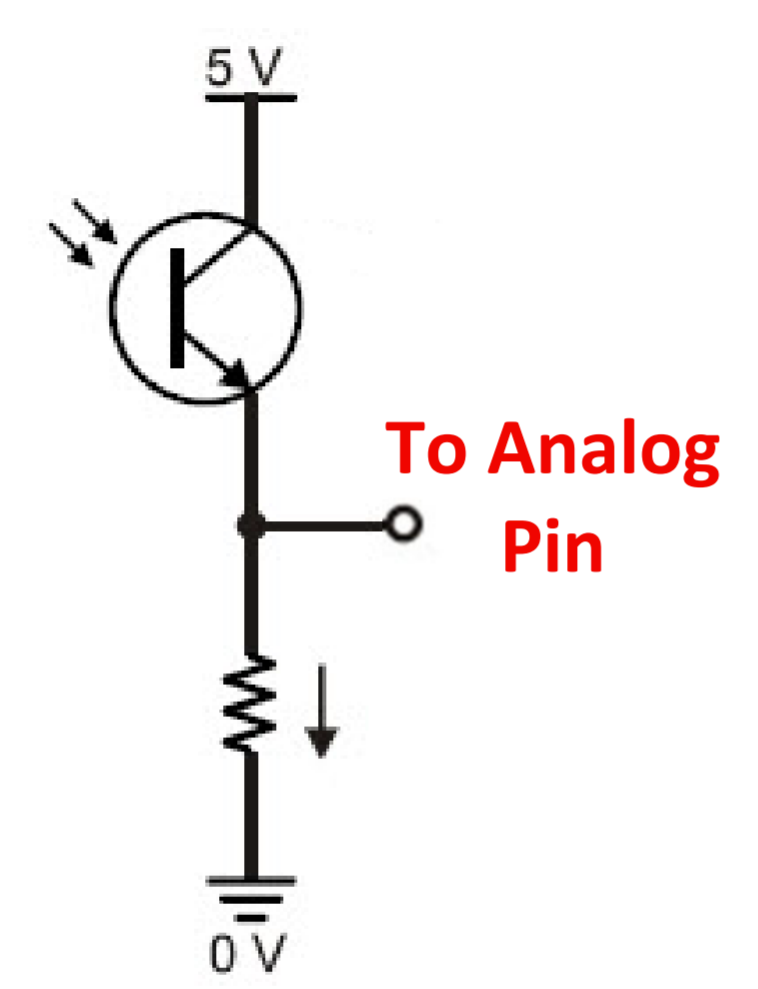
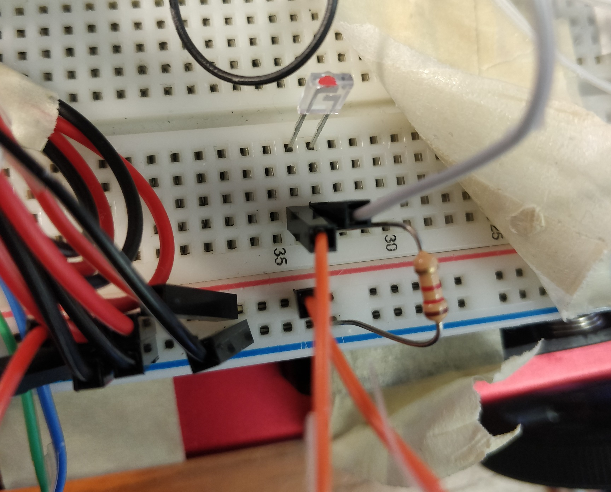
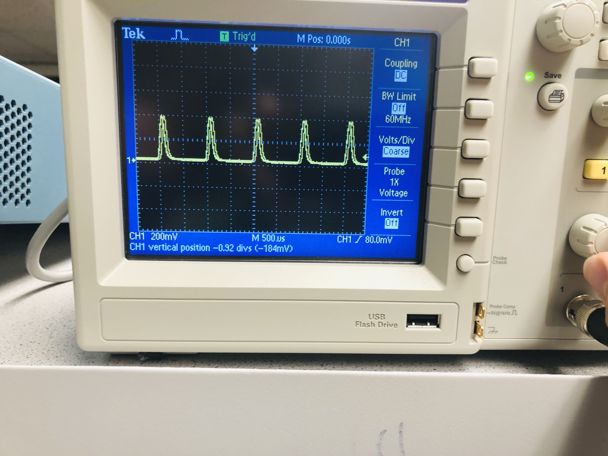
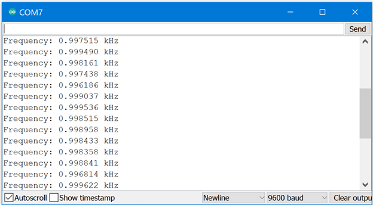
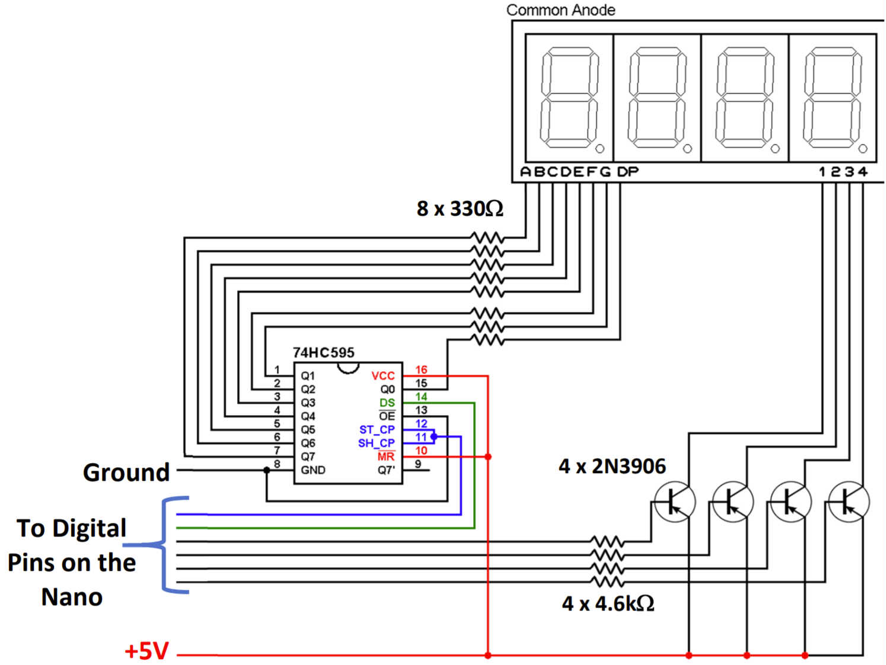
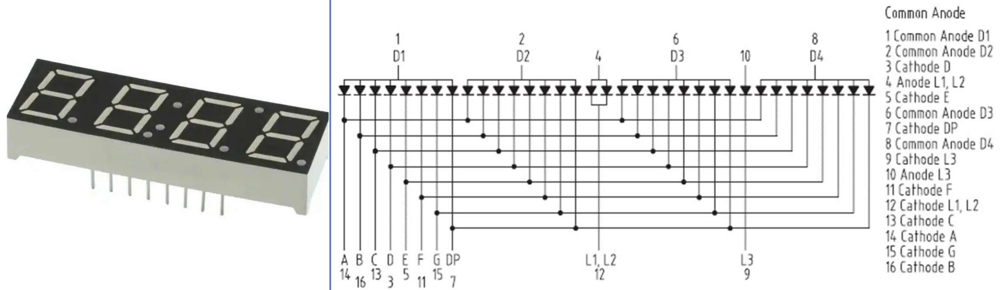
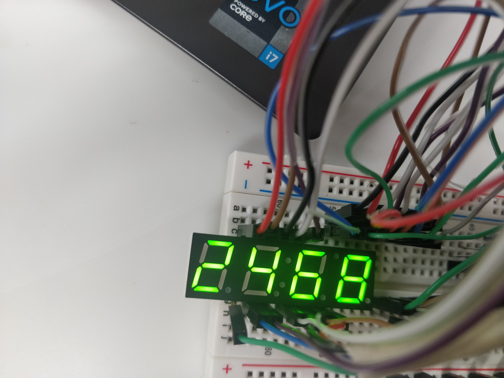
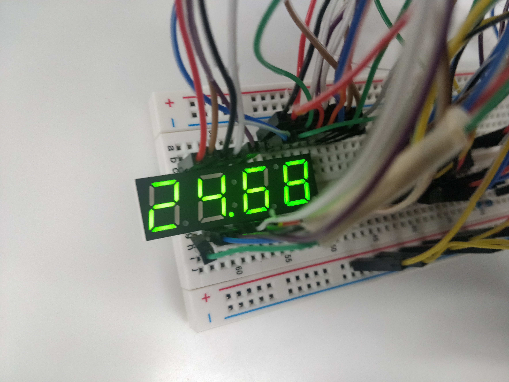

Lab 2
In the previous labs we built the robot base, its actuators, and gave it ultrasonic sensor to guide its sensor. In this lab we add phototransistors to enable us to detect light being emitted in the environment of the robot. These phototransistors will guide the robot in its final mission to find and identify targets in a maze at the end of the class. In particular, these phototransistors will be used in conjunction with the analog to digital convertor on board of the Arduino Nano in order to detect when the robot is very close to a treasure that is marked emitting a particular frequency. In this lab we set up the mechanism for using the phototransistors to detect what frequency is being emitted near the robot.
In addition, we start establishing the base station for the robot which consist of the an Arduino n a bread board saw well as a seven segment led display that will be used in order to display the frequency the robot is measuring with its sensors. the set up of the seven segment led and the base station was done as instructed in the lab. In the labs that follow this one we add Bluetooth modules for communication between the robot and the base station started here.
Materials
- Robot
- Long breadboard
- Signal Generator
- 3 x phototransistor
- IR LED + resistor
- Oscilloscope
- Arduino
- SN74HC595N registeri>
- 8 x 330 ohms resistors
- Many Many Wires
Light Detection and Frequency detection
In this first part of the lab we work on setting up IR detection on the robot and configure the code for figuring out the frequency of the IR detection.
The detection circuit we build consists of two components: photoresistors and resistors. the circuit is shown in the diagram below. Note that the circuit is set up with a pull down resistor in order to avoid floating values that may make it hard or impossible to read the analog circuit properly. After this circuit was setup on a breadboard, the integrity and behavior of the circuit were verified. This was done by building a second circuit that consisted of an IR LED that was powered with a signal generator. The signal generator was configured to send sinusoidal signals to the LED at 1kHZ. That set up emulated the signals that we expected to find in our maze during the final lab. We used this set up then to send signals to our phototransistor and used an oscilloscope in order to measure the signal detected by the phototransistor to verify that it behaved as expected. It did, and a snap shot of the signal observed in the oscilloscope is shown below.



After verifying the correctness of our circuit we attached the circuit analog pin to our Arduino and used the code provided in class to measure the frequency of the signal and print it to the serial monitor. The code uses an internal reference voltage of 1.5V to determine the value of our signal relevant to ground and then uses the count of times the signal crosses the reference voltage in a period of time to find the frequency of the analog signal. We measured a frequency of 1 kHz with our circuit, and recorded the output of our serial monitor. A screenshot of that output is shown below. By verifying our circuit using an oscilloscope first, we were able to debug the code and the Arduino set up faster. One of the challenges that faced us was that the photoresistor wasn't sensitive enough to the signal, this was a consequence of the reference voltage being too high after. After adjusting that, we were ready to detect any treasures in the final maze that we will have to solve in the end of the lass and moved on to the next part!


The Base Station (aka the mothership)
The final part of this class will require a base station that has RF communication capability and that connects to our robot remotely. In this portion of the lab we set up the breadboard and the Arduino for the base lab, but do not complete the RF communication part. We also configure a 7-segment display that will be used to display the frequency that the robot measures as it traverses the maze using the sensors we set up in the first lab of the part.
The circuit of the seven segment display was given in the lab handout and building up was a tedious but straightforward task with the aid of the data sheet. The seven segment display that we used was the TDCG1050M Green LED display, which is in a common anode configuration. It was used in conjunction with a shift register and 4 PNP transistors. The shift register was used to minimize the number of pins that will be used directly with the Arduino in order to leave the rest of the pins available for future usage. A shortcoming of this approach is that we can light only one digit of the 7 segment display at a time, since we use the shift register to light up the digits sequentially. The effect is not usually noticeable but using a camera with many FPS's makes it pretty obvious. It is also worth noting that the PNP transistors are used to prevent the circuit from drawing too much power from the Arduino. The circuit was built very carefully, and due to that minimal debugging was necessary.


After setting up the circuit code that was provided in class was "hacked" in order to print custom numbers to the circuit. At first we printed the numbers in the wrong order, but the problem was quickly fixed by switching the digital write pins to each of the digits of the circuits. After that step, we configured the code to write decimal numbers with two decimal places when the number to display was above a certain threshold, namely 999. pictures of the Final board and the display working are shown below.


This was a fun lab overall.